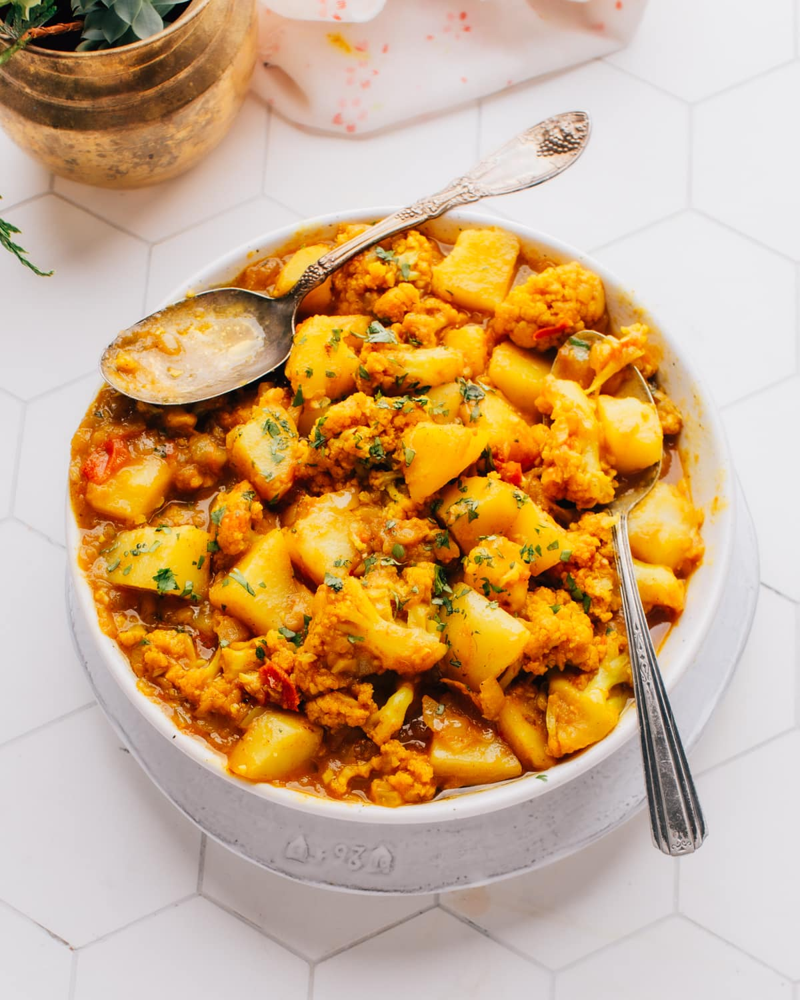

Back to Homepage
Aloo Gobi (Indian Cauliflower and Potato Curry)

Description
Aloo Gobi is a wildly popular Indian curry with potatoes (aloo in Hindi) and cauliflower (gobi in Hindi).
Ingredients
- Butter or ghee: Used to sauté the vegetables and add buttery flavor that goes so well with potato dishes (like potato samosas, aloo masala, or aloo naan).
- Onion: Adds flavor and sweetness to the dish.
- Salt: Enhances all of the flavors in the dish.
- Fresh grated ginger and garlic cloves: yummy aromatic background for the dish.
- Chillies: Optional for those who prefer their dishes spicier.
- Ginger. Use minced of grated fresh, juicy ginger.
- Cumin, Turmeric and Garam Masala: Gives this dish its classic Indian flavor.
- Cayenne pepper or Kashmiri Red Chilli Powder: Add a bit of heat and color to the dish.
- Tomato: Provides acidity and sweetness to balance out all of the spices in the dish.
- Cauliflower and Potato: The stars of the show! Cauliflower in small florets combine with diced potato to give this recipe its hearty texture and filling flavor that we love. I prefer yellow or red potato because they hold their shape. Russet potato will break down more for a mashed potato texture.
- Cilantro (coriander): Fresh cilantro adds a bright freshness to finish off this delicious meal (but it’s an optional garnish).
Steps
- Melt butter in a large dutch oven over medium heat, then add onion with some salt and let cook until soft and golden for about 10 minutes.
- Add ginger, garlic & chillies to the pan and stir until softened for about 1 to 2 minutes more. Now add your spices and let them cook until fragrant for about 1 minute more.
- Stir in tomato, cauliflower & potato then season with additional salt as desired before adding 2 cups water.
- Bring to a boil, cover then reduce heat slightly and simmer for 10 minutes while stirring occasionally. Uncover after 10 minutes and continue cooking until vegetables are soft & sauce has reduced for 5 to 7 minutes more.